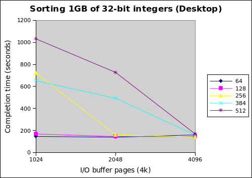
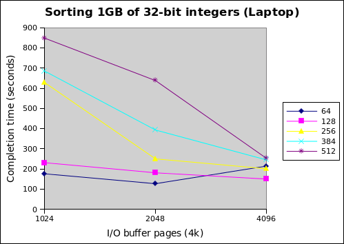

This is a common interview question: how do you sort data that is bigger than memory? “Big data” in the range of tera or petabytes can now almost be considered the norm (think of Google saving every search, click, and ad impression ever), so this manifests in reality as well. This is also a canonical problem in the database world, where it is referred to as an “external sort”.
Your mind should immediately turn to divide and conquer algorithms, namely merge sort. Write out intermediate merged output to disk, and read it back in lazily for the next round. I decided this would be a fun implementation and optimization exercise to do in C. There will probably be a follow-up post, since there are lots of optimizations I haven’t yet implemented.
Introduction
Guido van Rossum (the creator of Python) did this a while ago for the rather smaller (and simpler) case of sorting a million 32-bit integers in 2MB of RAM. I took the same approach of a merge sort that writes intermediate runs out to files on disk, buffering file I/O to improve performance. However, since I’m targeting file sizes that are actually larger than RAM (e.g. a couple gigabytes), I need to do more complicated things.
The basic merge sort you learn in CS 101 recurses down to the base case of runs of just 1 element, which are progressively merged together in pairs in a logarithmic fashion (arriving at the ultimate O(n*log n) time complexity). This is inefficient for large datasets, because the merging rate is too low. If you’re sorting a 1GB file of 32-bit integers, the first round of merging would generate (1GB/sizeof(int)/2) = (2^30/2^2/2) = 2^27 8-byte files, which is just too many files. This also leads to the second core problem: small disk I/Os are highly inefficient, since they result in expensive disk seeks. Writing a bunch of 8-byte (or even 8-kilobyte) files effectively randomizes your access pattern, and will choke your throughput. To avoid bad seeks, reads and writes need to be done at about the size of the disk’s buffer (about 16MB these days).
All of my code is also available on github if you want to follow along, this post is based more-or-less on the initial commit.
Basic Approach
So our goal is to reduce the number of files written by the first merge step, and also write these files in much bigger chunks. This can be accomplished by increasing the quantum for merging, and doing n-way instead of 2-way merging.
I increased the merge quantum by sorting each page (4KB) of initial input with quicksort. This way, even with just 2-way merging, the first round for our 1GB of integers only generates (1GB/page_size/2) = (2^30/2^12/2) = 2^18 intermediate files, which is a lot better than 2^27, but still too large (a quarter million files is a lot).
N-way merging merges more (many more) than two runs together at once, and is basically the same algorithm as 2-way merging. This finally reduces the level of fan out to manageable levels, and means that the size of the output runs is much larger, meaning that disk I/O can be more easily batched into large 16MB chunks. With 64-way merging we finally get down to (2^18/2^6) = 2^12, or 4096 intermediate files, which is a pleasant number.
A further necessary improvement is to incrementally pull large runs off disk (required for later merge steps, when the runs are too large to all fit into memory). I do this at the same granularity as my other I/O operations: 16MB. Currently, this decides the degree of fan out as well, since I pack as many 16MB buffers into memory as I’m allowed, and n-way merge across all of them. This could be a problem if oodles and oodles of memory are allocated to the sort (since n gets large), but my computer with 4GB of RAM can only hold 256 runs, which isn’t that many.
Miscellaneous notes
There are a few other miscellaneous notes. I ran into the per-process fd limit when doing large merges, so files have to be closed and reopened at the correct offset. I also parallelize the initial quicksorting of pages with a simple worker pool, which really helps speed up the first layer of merging.
My quicksort also reduces recursion depth by bubblesorting for runs smaller than 5, which is okay since bubblesort is efficient on tiny sets (worst case 6 compares, 6 swaps, compare that to insertion sort). This might or might not increase performance, but it’s fun. Finally, even if 256 buffers can fit into memory, one buffer must always be reserved to be an output buffer (meaning you can do at most a 255-way merge). There’s also some O(n) memory overhead outside of just storing the data buffers, which you need to be aware of if your memory bound is especially tight.
Benchmarking
Enough discussion, onto the numbers! This is a situation where I feel like building an autotuner, since my envisioned final version will have a number of knobs to tweak (a future project I suppose). Right now, the two knobs I have to play with are the size of the overall buffer, and the size of I/O buffers.
I took two sets of numbers. The first set was taken on my laptop, which is a Intel Core i7-620M supporting 4 hyperthreads, 4GB of RAM, and a 7200 RPM disk. The second set was taken on my desktop, an AMD Phenom II X4 965 Black Edition supporting 4 hardware threads, 4GB of RAM, and an 60GB OCZ Vertex 2 SSD. The SSD should help for the smaller I/O buffer sizes, but sequential access shouldn’t be too far apart.


I found these numbers pretty interesting. Each line represents a different total memory size. The graphs indicate that increasing the number of I/O buffer pages leads to better performance as expected, but the small total memory sizes end up performing generally better. Furthermore, my laptop performs better than my desktop with the SSD.
This can be interpreted as follows. First, linking the fan out of the merge to total memory size is a bad idea. The following table helps make this clear.
| Fan out of n-way merge | |||
|---|---|---|---|
| Number of I/O buffer pages (4k) | |||
| Total memory (MB) | 1024 | 2048 | 4096 |
| 64 | 15 | 7 | 3 |
| 128 | 31 | 15 | 7 |
| 256 | 63 | 31 | 15 |
| 384 | 95 | 47 | 23 |
| 512 | 127 | 63 | 31 |
By looking at the laptop graph and this table together, we see that high fanout for 512MB is killing performance, since it’s fine when fan out drops down to 31 at 4096 buffer pages. Conversely, the 64MB case suffers the opposite problem at 4096 pages; a fan out of 3 is too low. Since the two fastest completion times were both with a fan out of 7 (64MB with 2048 pages, 128MB with 4096 pages), I’m betting that it’s around here, but this requires further tuning to decide for sure.
The second finding is that the sort is currently CPU bound. This isn’t what I expected since there’s a lot of disk I/O, but it seems that the I/O batching techniques are effective. Otherwise, the desktop with the SSD should outpace the laptop. Furthermore, since merging is still single-threaded, the i7 laptop actually might have an advantage because of Turbo Boost kicking up single core performance above the Phenom II desktop.
Also note that for the relatively low fan outs at 64 and 128MB, the desktop with the SSD has very flat performance as the size of the I/O buffer changes. This is the beauty of fast random accesses, and might be exploitable for better performance since you can save on memory usage by shrinking the I/O buffers.
Future work
Both of the aforementioned performance issues can be solved by parallelizing the merge step by running multiple n-way merges simultaneously. This lowers the fanout while still using all available memory, and will better balance CPU and I/O time. The number of threads and fan-out of the merge can be parameterized separately, adding two more tuning knobs to the existing knobs of total memory usage and size of I/O buffer (autotuner time?).
Another potential performance improvement is double buffering. This is essentially asynchronous I/O; instead of waiting synchronously for an I/O operation to complete, the CPU switches over to a second buffer and continues processing data. This comes at the cost of doubling memory usage (two buffers instead of one), but is probably especially beneficial for the write buffer since it’s so active.
There are a few more minor performance tweaks I can think of, but no more really fundamental ones. Let me know in the comments if there’s something I’ve missed.
A natural extension to this is parallel sorting with multiple machines, but I don’t plan on taking this little C codebase that far. Better to do it properly with Hadoop in a lot less code.
Conclusion
My best case sorts 1GB of 32-bit integers in 127 seconds in 64MB of memory on my laptop, and I think there’s at least a 2x improvement left with bigger memory sizes. I really enjoy this kind of performance analysis and tuning, since it requires thinking about the storage hierarchy, memory management, and parallelism. It’s been a reasonable two-day project, and I could see this being assigned as an undergrad course project. It doesn’t feel altogether too different from research either, just at a much smaller scale.
Once again, all the code is available at github.